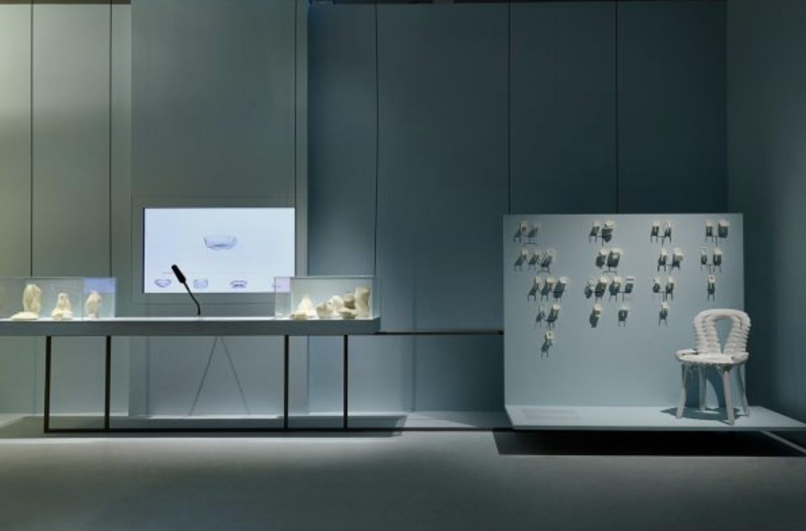
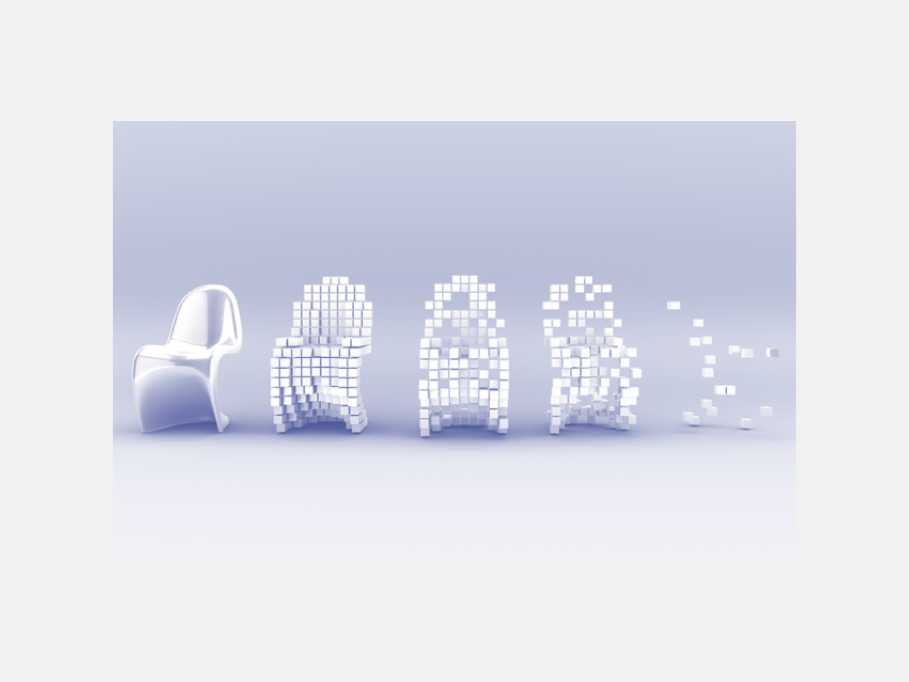
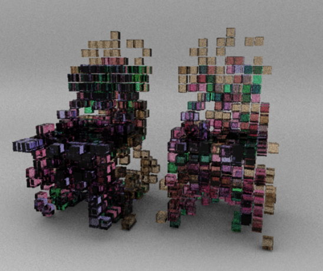

Introduction
Throughout our lives, we wrestle with the concept of authenticity - of self, of culture, and of our constructed environment. Even in our presently ironic and cynical age, the desire to be authentic remains a symbolic construct that continues to have cultural value in how we understand ourselves and our pasts. The objects that make up our material culture represent this plight; progressive attempts to be ‘authentically’ original and innovative are matched equally by a desire to reconnect with the ‘authentic’ past through the revitalisation or production of traditions. Oftentimes, the same objects that were at one stage innovative reemerge at a later date as traditional symbols that oppose change and innovation. As the lifecycle of a style unfolds, the objects that make up these styles proliferate, then become traditionised and abstracted. What they once represented is lost, the semiotic shift that occurs as new ideas operate under historicised signs and symbols alters perceptions of the past, whilst still maintaining a supposed authentic relationship to that past. The creation of new objects operating under the guise of tradition threatens to undermine real histories. This cycle continues as new designs are drawn up, creating a constellation of artifacts that make up our material culture. What becomes clear is that authenticity itself is not.
Essence of Change is an ongoing research project that explores relationships between innovation and tradition through the framework of the chair. Chairs have been used throughout history as the iconic medium by which designers evoke their values. Most known design movements can be identified through a well-known chair design. Alongside chairs, various objects in our material culture are examined throughout this research to explore the concept of authentic - what is authenticity, what objects are authentic, and are there ways to better produce or preserve the authentic in our constructed environment?
The nature of authenticity and the essence of change in design over time will be interrogated through three sets of chairs. A survey of gothic chairs from the 13th century to present day outline the life cycle of styles and their respective objects, highlighting how an object’s visual or proposed proximity to a history does not necessarily make it an authentic representation of that particular culture. Responding to the subjective nature of these cycles and how they orient themselves to history, I produced a series of digital chairs in collaboration with computers that examines history in another way, proposing chairs that aim to aggregate and summarise the past, and link to the future, in more objective and ‘truthful’ ways. Finally, the study of the white plastic monobloc chair, a symbol of globalisation and widespread adoption of form, represents ubiquity in our lives as another way to judge the authenticity of an object. The future of the monobloc as either a final form, or just one step of the cycle towards becoming traditionalised, will be questioned.
Through the process of examining historically-oriented, digitally proposed, and currently ubiquitous chairs, as well as adjacent objects in our constructed environment, Essence of Change hopes to guide consumers and designers alike to take a more critical view at objects that are pitched as authentic. As authenticity and identity continue to become topics that dictate our lives, it is important to be critical of objects and movements that appropriate old styles and prescribe new meanings to them. Tradition is used to ground a culture during times of great change. But when traditions uproot histories, the replanting of our pasts are subject to erosion and decay. Authentic is not what co-opts the past to achieve its own goals. The essence of change in design is the search for the authentic - it is clear that what this authentic might be remains unclear, and elusive.
Traditions and Life Cycles
“The cyclical movement of history was now intelligible, and if it was intelligible, then it was alterable.” - George Orwell, 1984, (1949)
When Abbot Suger first implemented what was later to be known as Gothic Architecture in his redesign of the Basilica of St Denis in France in 1135, his decision to create a new style of church was a decidedly innovative and progressive one. A follower of Pseudo-Dionysius, Suger was fascinated in introducing light in as many ways as possible into the nave of the church, an effect that would allow God’s presence to be felt more vividly in the church. Engineering innovations, such as an expanded rose window, vaulted ceilings, towering windows, and flying buttresses were all developed to support these new ideas. The new Gothic style moved swiftly through Western Europe; the influx of foreing styles, such as the middle Eastern pointed arch, coupled with expanding economies and a prevalence of engineers in the region, allowed for the contemporary style to flourish as a standing achievement of god and his people. Gothic architecture, and its proliferation into other areas of life, such as furniture, was a space of experimentation and progress, evidenced by a range of advancements and explorations throughout Europe in the middle ages regarding this style, culminating in the animating and imposing Gothic Flaneur style.
This interpretation of Gothic is notably different to that of John Ruskin, whose text The Stones of Venice, notably his chapter on “The Nature of Gothic,” had widespread influences on European’s feelings towards the style. Depicting the Gothic as ‘savage,’ and handcrafted, Gothic design appeared more rudimental and natural in comparison to the prevalence of designed goods manufactured during the Industrial Revolution in Europe. Ruskin called for a return to the Gothic, a return to man-made objects that connected with craft and nature, values that directly opposed the widespread industrial products of his time. But was Gothic truly romantic and pastoral, or was it - like the Industrial Revolution - a period of innovation and change, producing a range of artifacts that proliferated through our material culture? The Strawberry Hills Chair chair, carved in 1441 (fig 1) was certainly handmade, but was its designer happy, like Ruskin argued?
Today it is difficult to know such answers, and this is due to the fact that throughout the past 200 years of Western society, traditions are oftentimes invented or repurposed to create and anchor a group identity with a set of moral values that oppose large scale social change and progress. Tradition has been used dually by traditionalists (such as Ruskin) and progressive parties/entities to accomplish their goals, with both groups appropriating and recontextualising historic ‘tradition’ to produce reception and connection in audiences. These traditions serve to satisfy a desire for authenticity that arises during times of stress and change. In Cities Built to Music, Michael Bright argues that the Victorians of the 19th century were self-conscious and concerned about their legacy or identity. As changes during the Industrial Revolution occurred, the desire to maintain cultural and self-security drew individuals to objects and themes that feel more authentic to themselves. Authenticity, which can at times be used to describe the desired destiny, the truth, of the world, is commonly a destabilising construct. It critiques trends and phenomena, demanding a strict perspective on how the world operates. The genuineness of objects, experiences, and culture is constantly called into question; the desire to return to or find an ‘authentic’ consumes the lives of designers and individuals alike. Our material culture reflects these searches. In our efforts to experience the authentic, we oftentimes attempt to produce it.
The phenomena of resurfacing and recontextualising old traditions is described by Hobsbawm and Ranger in their book The Invention of Tradition as ‘invented traditions.’ They argue that ‘invented traditions’ are often key drivers in the formation of nationalism and group identity. These new traditions draw on nostalgic feelings of identity as a way to create cohesion across a culture. A revitalisation of the Gothic as Design Reform and Gothic Revival, ushered in by design theories such as Ruskin, is one example of this. Hobsbawm and Ranger offer a framework to analyse ‘traditional’ design movements that sprung up as a result of the Industrial revolution. Traditions are resurfaced as a way or harking back to a ‘better,’ more morally good time. As Roland Barthes mentions in his essay on semiotics Rhetoric of the Image, connoted symbolic messages (eg. pastoral Gothic imagery harkening back to a ‘simpler,’ more conservative time) that leverage cultural contexts and understanding – a rhetoric – can effectively communicate and transport deep cultural ideas through imagery to a contemporary audience.
When we compare a Gothic chair from 1441 (fig1), to a Gothic Revival chair created in 1775 (fig 2), the similarities in form are easily discernible. In fact, if a user was told to label each chair with a date, it would be easy to mistake one for the other. However, one was created as an expression of innovating techniques, and the other mimicked the forms and techniques employed by the other, but carried additional meaning. Outlined by theorists such as Ruskin and implemented more thoroughly by social workers and designers such as William Morris, the founder of the Arts and Crafts movement, Gothic Revival design was more than a revitalisation of style that had expanded and then lost mainstream favour. Rather, the design reform of the 19th century looked to use gothic symbols to represent a return to a pastoral, more English past, one that was disappearing under industrial pressure. As the Gothic designs of the middle ages looked to progress beyond more rudimental Romanesque designs, design reformers instead pulled on feelings of nostalgia, seeking a more ‘authentic,’ version of design as a way of reforming current social and design-focussed structures. If Gothic design in the middle ages was an authentic attempt at newness, then Gothic Revival’s attempt to bring the old into the contemporary was not authentic to Gothic at all. Though the two chairs above may look the same, what they mean is very different. In a dangerous twist, through the process of inventing traditions, aesthetics are dislodged from their original purpose and meaning. The result of applying new contexts to historicised signs makes these signs and styles more susceptible to appropriation and repurposing in the future. Furthermore, the lack of definition between revitalised and original breaks down and weakens conceptions of the original style. Authenticity is used as a tool, but authenticity to the design itself is sacrificed.
An example of this breakdown in future interpretations of the past is seen by following the life cycle of the Gothic. Today, the use of ‘traditions’ to support industrial practices is rampant. For if the cycle of a design style moves from initial innovation, to proliferation and dissemination, then revised traditionalism, the breakdown and movement of meaning leads to abstraction. H&M’s 2018 collection “Morris&Co x H&M” uses patterns derived from Morris’ woodblock prints and textiles in a line of clothing. It is an example of fast fashion linking itself to nostalgic traditions and pastoral Victorian imagery, as a way of altering consumer’s feelings of that brand. Traditionalism is communicated through promotional artifacts, including a highly glamorised film featuring Instagram models, photos on the website (fig 3), and an event at Morris’s famous Standen House featuring influencers wearing the garments. H&M subsequently appropriates the imagery of Morris, which was used as a protest against industrialization, and strips it of its original social values. Whilst both Morris’ woodblock print and H&M’s reproduction stand as examples of returning to the past as a way of inspiring feelings of tradition, H&M’s repurposing of Morris’ craftwork exemplifies industry’s ability to use tradition as a way of currying favour with suspicious consumers.
H&M clearly misrepresents the original intention of Morris’ prints. However, it brings up the question as to what extent were Morris’ own designs properly traditional, as opposed to equally disingenuous representations of another time in their own right. William Morris produced original designs, yet this idea of originality may in fact undermine the intention of representing a past time period. Whereas medieval art may have been attempts from the artists to represent the world around them, Morris’ own art is a direct response to social movements and change. The intentionality of his work is different. Instead, he appropriates historic aesthetics, and uses them to further his own social values, creating a design aesthetic that uses traditionalism to gain popularity whilst simultaneously presenting a progressive sociopolitical perspective that is staged as traditional. It can be suggested that because Morris’ own designs are ‘invented traditions’ as Hobsbawm and Ranger would argue, it in fact weakens the connection between aesthetic and meaning. The result of this is that Morris’ meaning can be abstracted or remodeled by others. Ironically, mass producers like H&M subsequently have been able to use his design as a bridge to another time, much like he did. And like him, they have been able to manipulate the original intention of the art, romanticising it, using it to encourage interest from others. Whilst Morris may have intended to resist industry with his design, he instead created an open door for the appropriation and romanticisation of his own work.
Commentary on the ironies of this sequence of appropriation and abstraction are also prevalent. Produced in the 1980s by Robert Venturi and Denise Scott Brown, the Venturi chairs reduce historic design movements ino flat planes, using modern practices and machines and materials to produce them. The signifier becomes a literal sign. Postmodern critique of history and invented traditions offer an opportunity to be critical of the cycle of style. This cycle is no more than a process of reducing style into sign, ambiguous symbols that shout “old” or “authentic” but carry various meanings depending on who has produced them. The irony of this irony is however, that pop and postmodern critique of tradition has become abstracted themselves, the ecosystem of self-critique and examination leaves it a place of experimentation and violent shifts in meanings and ideals.
The life cycle of a design style begins as a response to other ideas or artifacts. Gothic architecture looked to design a solution to the lack of light in churches. From its very start, the intention to change the status quo necessitates that authenticity is not what is historic. The Strawberry Hills chair represents innovation, an authentic expression, but a break from the cultural norm. The style enters the culture of a population, it proliferates, and embeds itself as a true, authentic part of our lives. The innovations they wrought remain but are not seen as innovating; they become common objects devoid of specific meaning or value. When changes in our lives arise, we look around at our changing environment, and seek out these historic forms to ground ourselves. We prescribe them new meanings, say they mean something more to us. The Gothic Revival chair is built. Morris romanticises the medieval with his prints. These objects proclaim their authenticity through form, but their goals are vastly different to their predecessors. Semiotic drift occurs. Symbols lacking concrete meaning serve as iconic signs of increasingly abstract times and ideals. H&M releases a collection using Morris’ prints, romanticising the 19th century British countryside, a countryside that Morris was appalled to see taken over by industry and machines. Each step of the cycle dilutes its predecessor. The present is out of sync with the past. Whether we choose to respond ironically to this or not, such as with Venturi’s chairs (fig 4), history is damaged permanently. Today, it is hard to say if the Moooi Gothic Chair (fig 5) is a commentary on the ironies of traditionalism, or itself is another reduced symbol of a past movement.
What does this mean for authenticity in traditional design? This cycle happens again and again across time, it is an authentic process. But when someone sits in a XoticBrands Medieval Gothic Solid Mahogany Wooden Cathedral Side Chair (fig 6) - which can be purchased on amazon - and compares the sensation to what it must’ve felt to sit in a similar chair in idyllic Western Europe in the 1300s, the revitalisation of style has failed to serve as a way of maintaining the authentic experience embodied by that first iteration of the style. Through past and present practices, it is clear that throughout the past 200 years of Western society, traditions have oftentimes been invented or repurposed to create and anchor a group identity with a set of moral values that oppose large scale social change and progress. These manufactured traditions are formed with the intention of resisting change and maintaining the ‘authentic’ through the revitalization of craft or traditional design; however, these efforts, failing to replicate both the sign and symbol of the original, are easily abstracted. As ideas are recycled, they lose their original meaning. Today, the widespread desire to identify oneself with a time that is fast expiring manifests itself in many ways, from the chairs we sit in to the adoption of Mason Jars (another Industrial Revolution invention). Inventing new ways to connect with the past creates artificial traditions that anchor new cultures. As individuals attempt to identify with their cultural past, this same past loses meaning. In 300 years, will a researcher be able to identify if a chair with pointed arches and a textile acanthus seat was created in 1534, or 1934? And what will this researcher think of when they hear the word Gothic? An innovative light-making architecture? A nostalgia for craft? A memory of a non-existent pastoral Britain? Traditions are used equally by traditionalist and progressive groups to accomplish a goal of linking the present to the past. The result of this is a reconstructed memory of history that weakens authentic tradition and meaning, and creates easily manipulated and appropriated new traditions.
Proposals
Design movements and traditions shape our understanding of history, but the way that they react to and reference each other also informs and retroactively shapes that said history. As we learned before, the life cycles of design are subjectively produced; different practitioners pick away at what suits their interests. How we form and shape a cycle has long term effects on how a history is viewed. By ignoring the actual lives of those suffering through famine and plague in Europe, designers such as Morris were able to formulate a Gothic of their own. This new gothic reoriented how H&M chose to tackle their own traditionally-inspired collection; the romantic imagery and nostalgia expressed by Morris served to form the ‘authentic’ reality that H&M contemporised. Retelling history is thus inherently biased, the danger arises when histories are uttered as truths and not interpretations. Skipping or altering a history can lead to different final interpretations. Linear and biased recollections of history don’t produce authentic forms. Perhaps authenticity isn’t an arrival or return to some moment of (non-existent) time, but an interconnection between different pasts as a way of describing both past and present. The authentic might be the objective summarisation of subjective renderings and readings of history.
To combat the subjective retelling of histories through design, I proposed an inquiry into an ‘objective,’ essence of the chair form, with the intent on producing a set of chairs that authentically told a story of the history of chair design. An innumerable number of design movements have evoked their values through the form of chairs. These styles, in communication with their predecessors and one another, ebb and flow over traditional and innovative practices, producing a variety of forms. The image of a chair may conjure up a variety of silhouettes and typologies. And yet, most of us would think of a seat, some legs, and possibly a back to the chair. What are these shared qualities, this essence of form, that binds disparate movements and artifacts together? How might we arrive at some sort of focal point or aggregate shape that is made up of a plethora of chairs that sit between the poles of tradition and innovation? Most cycles of design movements attempt to be authentic by holding true to the forms of their predecessors. In my proposed chairs, the shared intersections and similarities between disparate artifacts became the groundwork for my own attempts at achieving authenticity in the chair form. Projects such as FormNation’s ChairGenetics (fig 7) helped to frame my inquiry into the shared qualities of chairs through processes such as machine learning. Their research showed an inspiring use of technology to survey history; the implementation of contemporary technologies is not often used when recreating historic artifacts, where tools appropriate to the time period in question are often favoured. Whilst FormNation focussed on qualities such as ergonomics and price in chairs, my interest in looking historically at chairs was focussed more closely on symbolic style.
Initially, my prototypes involved stacking chairs on top of one another. The goal of this exercise was to visualise how different chairs relate to and contradict one another. Viewing this diagram (fig 8), it is clear that most chairs have legs (support), a seat, and back (support). A silhouette becomes apparent, one that is pulled further from its central point by certain chairs that present larger volumes, yet a present and strong gravity around certain aspects, such as legs, or a seating area create more obvious areas of shared form. By stacking the existing chairs in certain ways, or by playing with the opacity of a chair based on its age, the influence of a chair on the final silhouette is adjusted. Despite aiming to be objective in my choices of chairs or how I laid them out, biases towards style, and the impacts of time (newer chairs are less opaque, making them more influential in the final form), still shaped the silhouette.
The introduction of the computer into the design process opened new avenues for combating bias and arriving at a more ‘authentic’ final form. By leveraging the ‘objective’ traits of the computer, allowing it to take agency in executing designs, the subjective qualities of individual designers aiming to frame their objects could be ignored. Consider the image below (fig 9). A series of four chairs is interpolated between. The average middle ground between the first and second chair is then compared to the third; this aggregate is mixed with the fourth chair to produce the final form. However, in the second example, a chair is missing. The stark difference between the two versions illustrates how human decisions regarding what constitutes a story or history can have large impacts on how future objects look, and what pasts they speak to. Combatting this with the help of the computer, all included chairs were treated objectively as equally important components that helped to shape the final chair. This included ‘traditional’ and reproduced chairs such as gothic revival designs. Though their role as historic designs may be inauthentic their presence in our lives remains a fact. These artifacts, no matter if one decided to view them negatively, still have informed other future designs. To ignore them as objects that have shaped our material culture would be to fall into the traditionalist trap, the opposite of what this proposition looked to achieve. With the help of the machine, the process of visualizing and aggregating our human history of relationships between technology and tradition allows us to realise and find the essence of objects through time.
The physical design and production of a chair (its screws, nuts, and internal structures), is different to its final silhouette or surface; early attempts at finding mediums between sets of objects through the use of the computer (fig 10) made me realise that intricacies in design doesn’t necessarily correlate with the shape and form of a chair. My goal was not one of assessing the internal qualities of chairs, which, like the meaning prescribed to historic objects, can change and be adapted to suit contemporary needs. Like Venturi, I was interested in aggregating the symbols, the silhouettes of style. By breaking down chairs into sets of volumetric pixels, or voxels, the overall volume of a chair could be maintained and compared with other objects through the use of 3-dimensional grids. Experiments in Processing, a code environment for artists and aspiring coders, allowed me to quickly prototype and workshop ideas (fig 11) that experimented with randomness as a means of impartially displaying parts of different chairs.
The interpolation between forms through the use of voxels and randomness allowed me to create an ecosystem that could be populated by units derived from chairs. This randomness could be weighted based off of factors such as time, the popularity of an object, or other parameters. Conceptually, I was interested in tracking through a history of chairs, as a way of seeing where we came from, and where we are going in chair design. The potential to illustrate and history and influences of chair genetics and style over time through a single chair became the goal of the final chairs I produced. Thus, time became the determining axis that dictated how prevalent each of the chairs referenced would be in the final design.
By stacking a series of 3D chairs in a software called Maya, and reducing these chairs into voxel grids, I then randomly called a chair’s voxels based on their age. For example, each individual voxel of a chair from 1910 had around a 10% chance of being displayed. Voxels of chairs from 2000 may have had a 60% chance of being rendered (fig 12). The overlaps can be seen in the figure below (fig 13), where more overlaps between chairs (or similarities in their forms) were rendered as darker shapes. A spatial fractal known as a Hilbert Curve was used to render these voxel intersections as physical, filled cubes, with the intention of using the path-like qualities of the fractal as a foundation for future 3D-printing of these proposed chairs. Hilbert curves are spatial fractals that can become more complex in cubes, a perfect way of representing different levels of density. For instance, if there was no overlap amongst chairs (e.g. only one chair produced a voxel at that specific part of the 3D field), the simplest, least dense Hilbert curve (n=1) would be called. As more overlaps and intersections occurred, a more dense fractal would be called. The result was a fascinating form that showed a density of different chairs, relationships and connections, but also was interesting in its own form.
The final chairs (fig 14) produced offer a new way of observing histories, not as iterative stages in a cycle, but as a holistic group of shared identities. Randomness across multiple iterations aimed to remove any error, allowing the truth of form to emerge. These forms, though digital, represent another version of the authentic, one that summarises pasts, but also alludes to where we may be going. Styles revolve around a shared past. Though interpretations of these style smay shift, they remain as influential touchstones of our material culture, influencing and shaping our relationships to the past and present. Aggregating these forms creates a true summary of our visual past. If authenticity is the attempt to encompass the human experience to provide a shared truth, then these objects may begin to point in that direction. The relationship between human and machine also poses new questions of authenticity. As computers take on a larger and larger role in our lives, how will we view their creative expressions?. Authenticity as a non-biased and gendered perspective can look to the computer as a device for arriving at an objective truth. With the help of the machine, the process of visualizing and aggregating our human history of relationships between technology and tradition allows us to realise and find the essence of objects through time. Human computer relationships still contain bias ( the computer’s ‘decisions’ were made in an environment where parameters and objects were decided by me), but the act of relinquishing control over the narrative is a step towards removing ourselves from the subjective revision and editing of histories. Good or bad, each and every object in our material culture shapes us, to remove these artifacts, or to reframe them, restructures our histories, and thus perception of self.
Ubiquities
Authenticity as a construct in our material culture is oftentimes associated with what remains historically true and accurate. But as we have seen, the diffusion and spread of meaning, coupled with appropriation and co-opting of historic symbols to represent new ideas of the present or past limits the extent that tradition in our constructed environment is authentic. In trying to combat these realities, my proposed chairs looked at shared truths and histories, objectively aggregating disparate forms to find an essence of joined form. This too can be seen as an authentic representation of our material culture, and yet these objects do not exist, and indeed hold their own sets of biases and limitations. The arrival of design at some sort of destined or final form, be it a return to the traditional source, or a desire to seek the central node between styles, appears to be one of the goals shared by many designers and consumers alike. People are attracted to what is pure, final, and non-changeable. One such chair in our material culture may point to these parameters: the cheap plastic chair, otherwise known as the monobloc.
The monobloc reveals itself in the 1960s after a wave of modernist designs centered around functionalism, simplicity, and truth to material values. Early modernism rejected the overly industrial practices of 19the century Europe. Like traditionalists such as WIlliam Morris, thoughtful, ‘good’ design was seen to have a social role in society, a tool that could help shape culture and thought. Unlike Morris, however, modernists also rejected other historic precedents for their designs. Whilst previous cycles of design looked back in time to inform their subsequent iterations, Modern design focussed on more tactile realities of the now: cost, connection to the body, use, and material. The concept of making chairs from single pieces of materials has long been a goal for designers. In many ways, this desire to create a single extruded form, an arrival at a finality of design, where nuts and connective bolts are traded for an abbreviated essence of form, shares many relationships with the work completed during my research into objective proposals of what a final, or aggregate chair might look like. But instead of finding summary through the examination of past precedents, designers of this school of thought looked to new ways of producing their forms. Ironically, this is similar to the innovative gothic architecture designers of medieval Europe, who later spawned the series of abstractions and false traditions previously described. For modernist designers tackling questions of materiality, the goal of reducing fluff down to purely sublime function and connection between object and user was an enchanting concept that could bring one intoxicatingly close to an essence or truth of form.
Experiments date back to the early 20th century, mainly through the exploration of pressing sheet metals and bending laminated woods (a leading example being Eames’ bent ply LCW chair.) After WWII, plastic became an increasingly exciting material that offered design freedom and low costs for post-war markets. The Organic Chair (fig 15) from Eero Saarinen and Charles Eames exploited these plastics but were, in reality, a fibreglass chair reinforced with metal legs. Saarinen’s desire for a “structural total” reflected prior desires to return to the rules of older furniture, which used single materials (such as wood) to produce a complete object.
Danish designer Verner Panton in 1968 finally produced the first single-form, single material, injection-moulded chair, (see top) in one of the defining moments of furniture design. The Panton chair remains an icon, but also a very high-design, even today. In 1972, French engineer Henry Massonnett reduced the injection-process time to a duration of two minutes through the use of polypropylene at STAMP (Société de Transformation des Matières Plastiques), a factory in France. The Fauteuil 300 (fig #) remains one of the few early models that is cited as an archetype for the contemporary monobloc chair. The speed of manufacture coupled with the low cost of plastic, allowed for the proliferation of monoblocs we see today.
Today, the monobloc chair is an object that is ubiquitous in our constructed environment. It is synonymous with weddings, beaches, pool patios. It is a global object. Could this chair also represent some essence of form, some destination, a final shape? Or, like the many cycles of design styles and movements, such as the Gothic chairs previously described, is this chair too just enjoying one stage of its life cycle? Will it one day become an object that is romanticised and traditionalised?
Even sodas and fast food chains still express some regional sensitivities. The monobloc does not. It remains unique, and in fact reminds us despite our cynical viewpoint towards the homogenising world, that in fact most objects and experiences still offer some form of context. This chair doesn’t require specific changes to remain successful in Latin America, the Pacific Northwest, Central Asia, of New Zealand. To dismiss the monobloc as inauthentic because it lacks a specific context ignores that its value, its true purpose, is in its ability to integrate into the lives of many without requiring it or it’s user to adjust.
Virtually every object suggests a time and place. The monobloc is one of the rare objects that remain free of these specific contexts, contexts that allow other styles and movements to offer rich opportunities for abstraction and appropriation by interested parties. Seeing an image of a white plastic chair offers no contexts for where someone may be. The monobloc thus approaches a realm of decontextualised perfection. There is something beautifully ubiquitous, something post-colonial, decentralised, and everlasting as the resin stacking chair. Understanding the Monobloc chair as an object birthed from innovation, it is easy to draw similarities between this chair and the gothic chairs or many other styles that have come to pass. Surely the monobloc will one day become an ornate artifact that symbolises some time now lost? Nostalgia will draw it back into the fold, with new nuances and details that help to traditionalise it for an audience that is seeking to return to some lost identity? What will these futures look like?
But the monobloc also offers up another form of authentic truth: perhaps its ubiquity, its commonness, makes it timeless, omnipresent, and unchanging. Maybe the monobloc, unlike my computer-generated proposals that mix bias and objectivity in confusing and misguided ways, introduces an authenticity that can only be arrived at when an object is trying to not say anything at all. When studying the process of making an object traditional, and the abstract consequences that brings, it is clear that objects trying to say certain things, such as social reform in the Gothic Revival, allow these objects to be appropriated and changed.
So the monobloc appears to have the traits that may allow it to transcend the common cycles that plague design movements. And yet, when we look at similarly universal design forms, we see that shape and silhouette does not necessitate a stable semiotic meaning and unchanging role in our material culture. The mason jar offers a precedent for this. Mason jars were first introduced in 1858 by John Landis Mason. A symbol of the potential of innovation afforded by mass production and manufacture during the Industrial Revolution, these jars allowed users to can and store food. Their shape back then remains similar to today. Despite this, the contexts for how we think about the mason jar have changed drastically. The mason jar today is synonymous with the hipster, the millenial. Objects that once represented a homey conservatism are now central to crafting culture and mixed drinks at a new hip restaurant. As described by Jeff Fromm in his 2013 book Marketing To Millennials, mason jars connect with the millennial desire to search for authenticity, to find some grounding connection to making, self-expression, and the past. Like the design reformers of the late 19the century, when faced with large digitally-induced social changes and financial crises, objects such as the mason jar, which once represented the successes of industrial innovation, now serve as objects of resistance to capitalism and mass-produced systems. The cycle from innovation to abstracted tradition does not mean that form must drastically change. Today, brand such as Starbucks, a large coffee chain, has co-opted the form of the mason jar to connect with wary younger crowds. Objects are prescribed meaning to help legitimise a cultural identity, to provide authenticity, but these abstractions and new meanings de-anchor the objects from their origins. As they drift, they can become appropriated and become hollow symbols of what they once represented. Objects are vehicles for culture and ideology. If a mason jar now symbolises authenticity, then authentic it is in the hands of those who view it that way. How it will be viewed in the future as it morphs into an object of irony and self-critique (see 7/11’s mason jar mustache, fig X) remains to be seen, but it will likely never stand as a technical achievement of the 1800s again.
Thus the monobloc, like the mason jar offers a final hypothesis, that the form of these objects comes second to the meaning they try to prescribe. That what an object signifies supersedes its form. Even if the monobloc continues to be produced in its current state - and it likely will, with injection-moulds and manufacturing plants continuing to proliferate and disseminate around the globe - the contexts we view this chair with will likely shift. Already, retrospective exhibitions such as Vitra Design Museum’s Monobloc - A Chair for the World exhibition from 2017 points to shifts in perspectives. The monobloc is clearly different in appearance and meaning than the innovative chairs that birthed it, its future remains unclear. The current environment of constant referencing to the past to inspire new postmodern interpretations or commentaries on histories, from retro NBA jerseys at coachella to mail delivery brands on hoodies indicates that any and all objects are subject to investigation and abstraction. Some artists, such as Fernando and Huberto Campana, have begun to experiment with abstracting the monobloc’s form (fig ). Whether it's silhouette adjusts over time, or just the significance it holds.
The monobloc offers a new interpretation of authenticity. Its varied and diluted past, and its equally decontextualized and non-historic form makes it difficult to prescribe specific significance and thus cultural meaning beyond its obvious omnipresence in our society. Whilst many design styles look to reference pasts and precedents for their objects and subsequent iterations, the monobloc remains authentic in its harmony between ergonomics, economic practicality, and - most importantly - its lack of contexts. People remain searching for some form of true representation of the self and of life. Perhaps authenticity can only be arrived at not through the intersection of shared pasts or a desire to revitalise a fleeting history, but from the complete dismissal of them. As the meaning attributed to the monobloc changes with time, it seems inevitable that the way we view the monobloc will change too. Its authenticity as an object sterilised from contexts will naturally fade as we have seen countless other times, from mason jars to gothic arches. The future of the monobloc as an example of authenticity as ubiquitous, truthful to itself, and lacking in preexisting contexts, is dependent on how audiences choose to contextualise and orient it within our material culture.
Conclusions
Authenticity is often linked to an idea of unmoving truth, a source that can be reached or returned to to provide a genuineness to the human experience. However, more often than not, authenticity is a destabilising device, threatening to disregard any and all aspects of material culture in favour of a narrow, oftentimes, unobtainable perspective. Answering questions about authenticity is a tedious task. However, by looking at artifacts of our material culture, we can begin to understand how authenticity becomes a symbolically important construct, even if the true nature of the authentic becomes elusive. The cycle of objects from innovative to traditional and finally abstracted illustrates the plight of those who desire to find some connection to a distant past. The efforts to do so unfortunately dilute and cloud these pasts beyond recognition. Aiming to combat subjective perspectives of authenticity, I attempted to make my own aggregates of history, combining multiple styles and artifacts to produce digital chairs that illustrated a shared essence of form. These objects were authentic in that they drew from various pasts to provide a genuine summarisation of design, but they also remained completely artificial - digital, and without any connection to the real, lived world.
The ubiquities of the plastic monobloc chair offers a dynamic way of viewing the nature of authenticity in design. The monobloc remains free of contexts and easily described meanings, it is ambiguous yet omnipresent. Despite this, it exists in our world, in our material culture. Perhaps it may transcend the cycles of style, and exist throughout time in its current form. But when examining objects such as the mason jar, even a static form can be fluid in its cultural meaning and significance. How will future generations view the monobloc? Will it become a symbol of the late 20th century expansion of globalisation, of disposable and plastic waste? Will restaurants that say “we do things different around here” ask customers to order expensive share plates whilst sitting on plastic injection-moulded chairs?
The future of the monobloc relies on how designers and consumers choose to contextualise an object that at this stage remains free. If we choose to prescribe the monobloc with specific meaning, we will direct its life cycle in a certain way, as design reformers shaped the future history of Gothic. Trying to say an object is something that it is not is the easiest way of degrading its history, and thus our own understanding of our present, past, and future. Tradition is used to ground a culture during times of great change and provide a guise of authenticity. But when traditions uproot histories, the replanting of our pasts are subject to erosion and decay. If we are to remain connected to our pasts (and I hope we do) we should do so carefully, paying respect to that that came before us, and refraining from trying to tell ourselves that that past said something it did not.
The monobloc is important - authentic - because of its lack of tangible importance and authenticity. But as we have seen, the maintenance of authenticity is impossible, and in fact this maintenance results in the diluted mess of histories that has marked movements such as Gothic revival. As authenticity and identity continue to become topics that dictate our lives, it is important to be critical of objects and movements that appropriate old or existing styles and prescribe new meanings to them. The true nature of authenticity is in the essence of change, to understand that our material culture is always evolving and rushing downstream. Whilst we should observe the river of our designed world, and respond to it, and even add to it, we can be better designers and consumers by not polluting it with false signifiers, or producing dams that divert flows and redraw maps of history. The springs and tributaries that feed our material culture should be preserved. The monobloc may change in due course, but its current state should not be forgotten.
The essence of change is the search for the authentic, it is clear that what this authentic might be is destined to remain unclear, and elusive.
Presenting the Research
As recent events such as the COVID pandemic have shown, the ability to communicate ideas digitally and remotely is a growing need amongst all areas of life. Essence of Change sits naturally within the translation of physical artifacts to new mediums and spaces. As so many of the objects explored were old, rare, vanished, or site-specific, gathering and presenting these resources demanded non-physical methods. Already, the dialogues between objects that are only retained through drawings and images, and proposed digital chairs that I produced, create a conversation about presentation. A chair is a physical product, how we understand it so dependant on our physical experience with it. The prospect of engaging with digital chairs and images of chairs never encountered by people alive today meant that the traditional exhibition format had to be adapted. When Vitra Design Museum presented their exhibition “Monobloc – A Chair for the World,” they showed that images and physical chairs from past and present could be staged together to provide an encompassing narrative of a set of chairs. The mixture between real and fake, existing and non-existent, provided a blueprint for my own show. Conversations with artist-curators such as Jason Hirata showed me that exhibition was less about stripping away the excess, as I had previously thought. Instead, the tension created by staging different artifacts together created new stories, new connections, that allowed an audience to draw their own links between narrative elements. Hirata’s solo exhibition, “Sometimes You Are Both,” at 80WSE at NYU, used artworks form other artists to create a show focussed on Hirata himself. In the introduction to the exhibition he writes, “the proposition is that you are in an exhibition by Jason Hirata.” The way of framing disparate artifacts to serve a new purpose of interrogating art making itself spoke to my own exhibition, where various objects and movements were to be pulled together to say a new story. An online exhibition-style format began to take hold as my medium for expression.
Digital exhibitions offer unique opportunities to explore both the mediums of web, and exhibition design itself. As the world becomes more digital, the translation of physical objects to the digital space mixes with new media that is designed to be consumed online. A sculpture that was once meant to be experienced in person is now showcased on a site. A sculpture meant to be photographed and shared as a backdrop to a social media image can also find its way online. These two forms appear similar, but the contexts of their documentation, experience, and life beyond the experience are different. The digital space blurs distinctions between these traits. It was important for me to show how the artifacts I was describing come from different sources, and different purposes, but are being displayed in this exhibition for the purpose of comparing them. Like my thesis itself, the digital exhibition raised questions of authenticity; is a digital chair with no structural rigidity really a chair? These challenges drove me to find some a way of levelling all artifacts to a similar plane; each artifact is important because of the story it tells and the meaning the sign may signify. Proposed or non-existent objects shouldn’t be relegated because of their form, they also offer provoking questions to the important conversations around authenticity in material culture. While I understand that the use of digital chairs to propose perspectives of ‘authenticity’ may fly in the face of those claims, the role of this exhibition was to provoke deeper questions of authenticity, asking audiences to step beyond their current perspectives of the concept and intite fresh or confronting views. The mix of mediums, sources, and artifacts themselves were included together to draw out this point.
For these reasons, the final form of the website features an array of objects spread across a site, with many of these artifacts not being chairs, but adjacent concepts or objects. Chairs were the lens to view broader questions of culture; other points of entry, such as the mason jar, should be included to provide audiences with a maximum number of ways to connect to the site. After experimenting with horizontal and vertical scrolling across artifacts, it became clear to me that a broader, more free approach, like a large gallery room, would allow for more open discovery and inquiry. Audiences could start at any point of the ‘exhibition,’ selecting an object to hear its back story or a broader narrative associated with that object. This explore page acts as an exhibition and archive. Audiences can pick and choose to see what they want - the more they see, the deepen their understanding may become.
The board viewport for the exhibition allows the project to be expanded or adjusted in the future. As more artifacts are added to the site, it will become more lush. Multiple viewpoints of authenticity are expressed, as well as multiple points of time, showing audiences the multifaceted and deep nature of the research. Though text and objects have been organised to guide audiences to become more critical of ‘traditional’ designs, each method of authenticity (traditional cycles, proposed aggregates,and ubiquitous forms) are critiqued and given recognition for their roles in shaping material culture and the concept of authenticity. It is my hope that in the future, more artifacts and adjoining text can be used to strengthen arguments and provide more viewpoints. The inclusion of several long-read essays on other tabs of the exhibition offer additional areas to dive more deeply into specific topics. Whilst I may wish audiences to come away with a newfound critical perspective on the construct of authenticity as a whole, it is my hope that any viewer of this exhibition may gain a deeper understanding of the roles designed objects take in our lives. Our histories, and perspectives of these histories, and thus our current selves, are deeply tied to the objects we use to describe or connect to these histories. By seeing that all objects in our material culture respond to or connect with one another, as they do through the thin webs and lines of this exhibition, we can have a greater appreciation of the connection between the constructed environment and lived experience.
References
Ashby, Charlotte. "Nation Building and Design: Finnish Textiles and the Work of the Friends of Finnish Handicrafts." Journal of Design History 23, no. 4 (2010): 351-65. http://www.jstor.org.libproxy.newschool.edu/stable/40958919.
Barthes, Roland. Image, Music, Text: Essays. Edited by Stephen Heath. New York: Hill and Wang, 2007.
Bright, Michael. Cities Built to Music: Aesthetic Theories of Victorian Gothic Revival. Ohio State Univ. Press, 1984.
Bronner, Simon J. Explaining Traditions: Folk Behavior in Modern Culture. University Press of Kentucky, 2011. http://www.jstor.org.libproxy.newschool.edu/stable/j.ctt2jcn8m.
Chrostowska, S. D. "Consumed by Nostalgia?" SubStance 39, no. 2 (2010): 52-70. http://www.jstor.org.libproxy.newschool.edu/stable/40801075.
H&M. “Morris&Co x H&M.” YouTube, uploaded by H&M, 3 October 2018, https://www.youtube.com/watch?v=stImlDvdVOY.
Hobsbawm, Eric J., and Terence Ranger. The Invention of Tradition. Cambridge: Univ. Press, 1983.
Hughes, Robert. The Fatal Shore: a History of the Transportation of Convicts, 1787-1868. London: Collins Harvill, 1987.
“Introducing Morris & Co x H&M: H&M US.” H&M. H&M, October 4, 2018. https://www2.hm.com/en_us/life/culture/inside-h-m/introducing-morris---co-x-h-m.html.
Jones, Owen. The Grammar of Ornament. London: Day and Son, 1856.
Lees-Maffei, Grace, and Kjetil Fallan. "INTRODUCTION: National Design Histories in an Age of Globalization." In Designing Worlds: National Design Histories in an Age of Globalization, edited by Lees-Maffei Grace and Fallan Kjetil, 1-22. NEW YORK; OXFORD: Berghahn Books, 2016. http://www.jstor.org.libproxy.newschool.edu/stable/j.ctv8bt1mv.4.
Morris, William. “Textiles.” Journal of the Society of Arts 36 (October 19, 1888): 1133–35. https://books.google.com/books?id=7lEmAQAAIAAJ&printsec=frontcover&source=gbs_ge_summary_r&cad=0#v=onepage&q&f=false.
Morris, William. “William Morris, ‘The Lesser Arts.’” In The Industrial Design Reader, 35–40. NY, NY: Allworth Press, 2003.
“Pugin's Buildings: Australia.” The Pugin Society. Accessed November 11, 2019. http://www.thepuginsociety.co.uk/sydney2.html.
Rodulfo, Kristina. “This Is the Disposable Camera App All the Cool Kids Are Using on Instagram.” ELLE. ELLE, March 26, 2018. https://www.elle.com/culture/a19593003/disposable-camera-filter-app-huji-instagram/.
Ruehl, Isabel C. “Out With the Old and In With It Too: Thrifting Is 'In' in Cambridge: Arts.” The Harvard Crimson, April 30, 2019. https://www.thecrimson.com/article/2019/4/30/cambridge-thrift-shops/.
Ruskin, John. The Stones of Venice. London: Smith, Elder, and Co., 1853.
Sari, Talia, and Shovava. “Art History: Ancient Practice of Textile Art and How It Continues to Reinvent Itself.” My Modern Met, October 3, 2017. https://mymodernmet.com/contemporary-textile-art-history/.
Sedikides, Constantine, Tim Wildschut, and Denise Baden. “Nostalgia: Conceptual Issues and Existential Functions.” In Handbook of Experimental Existential Psychology, 200–214. NY, NY: Guilford Press, 2004.
Semper, Gottfried. The Four Elements of Architecture and Other Writings. Trans. Harry F. Mallgrave and Wolfgang Herrmann (Cambridge, 1989).
“V&A · William Morris Textiles.” Victoria and Albert Museum. Accessed October 24, 2019. https://www.vam.ac.uk/articles/willam-morris-textiles.
“VONSBÄK Rug, Low Pile - Green.” IKEA. Accessed November 8, 2019. https://www.ikea.com/us/en/p/vonsbaek-rug-low-pile-green-40450029/.
Wallerstein, Immanuel. “Culture as the Ideological Battleground of the Modern World-System.” Theory, Culture & Society, vol. 7, no. 2-3, 1990, pp. 31–55., doi:10.1177/026327690007002003.



Figure 7: FormNation’s ChairGenetics



Figure 12: An example of interpolating through random sampling of voxels, using Verner Panton's chair.

Figure 13: Visualising the intersections of voxels between four different chairs.